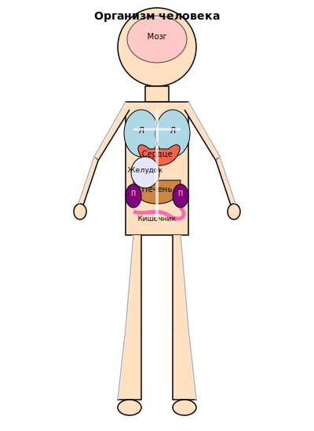

Макро және микроэлементтер — ағзаның дұрыс жұмыс істеуі үшін қажетті минералды заттар, олар көптеген биохимиялық процестерге қатысады.
Макроэлементтер — ағзаға үлкен мөлшерде (күніне 100 мг-нан астам) қажет минералды заттар. Оларға кальций, фосфор, магний, натрий, калий және т.б. жатады.
Микроэлементтер — аз мөлшерде (күніне 100 мг-нан аз) қажет минералды заттар. Оларға темір, мырыш, йод, селен, мыс және т.б. жатады.
Адам ағзасындағы әртүрлі элементтердің рөлі туралы білу үшін төмендегі суреттегі түймелерді басыңыз.

Минералды заттардың маңыздылығы
Адам ағзасындағы элементтің рөлін білу үшін суреттегі кез келген элементті басыңыз.
Макроэлементтер қызыл түспен, ал микроэлементтер жасыл түспен белгіленген.
Кальций (Ca) - макроэлемент
Негізгі қызметтері:
Сүйектер мен тістердің қалыптасуы
Жүрек ырғағын реттеу
Қан ұюы
Жүйке импульстарының берілуі
Бұлшықет жиырылуы
Көздері: сүт өнімдері, жасыл жапырақты көкөністер, жаңғақтар, сүйекті балық.
Тапшылық салдары: остеопороз, рахит, спазмдар, жүрек қызметінің бұзылуы.
Магний (Mg) - макроэлемент
Негізгі қызметтері:
300-ден астам ферментативті реакцияларға қатысу
Қан қысымын реттеу
Сүйектердің қалыптасуы
Ақуыз синтезі
Глюкоза деңгейін реттеу
Көздері: дәнді дақылдар, жаңғақтар, бұршақ тұқымдастар, жасыл жапырақты көкөністер, банандар.
Тапшылық салдары: әлсіздік, спазмдар, жүрек ырғағының бұзылуы, қан қысымының жоғарылауы.